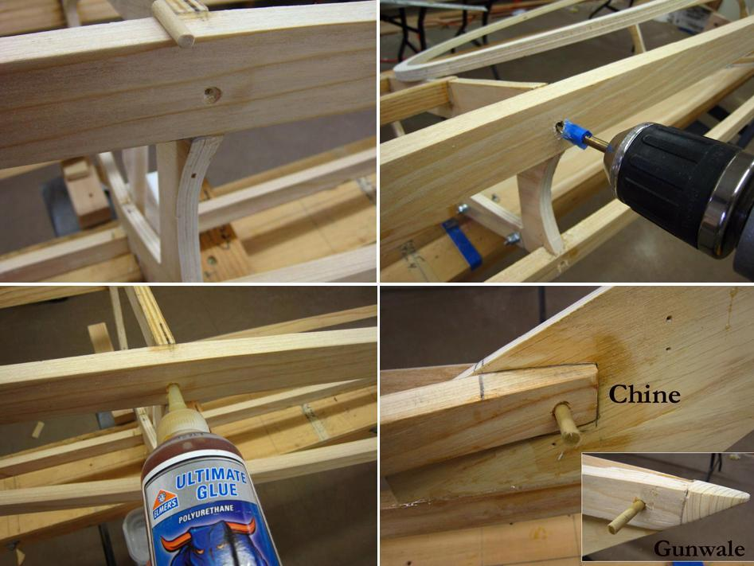

| Peg / Glue Frame | Menu Last Page Next Page |
|

Pegging the frame with wood dowels will add strength to the already strong epoxied stringer / cross section connections. The 3/16" or 1/4" dowels can be epoxied in place after drilling, but polyurethane glue is being used above. The dowels are first cut to a 1 1/4" length and the holes drilled to the same depth. The stringers at the bow and stern require longer dowels. Place tape on the drill at the 1 1/4" mark to insure accuracy when drilling. Squeeze a small amount of glue into the hole just drilled. Insert the dowels slightly into the holes.
|
|